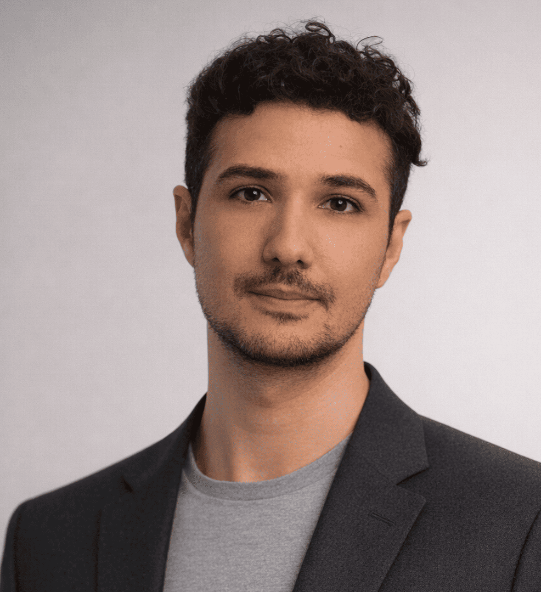

Finance • Conformité • Données • Processus
Parcours international — Brésil & France

Comprendre les enjeux. Relier les personnes. Transformer la complexité en solutions simples.
Je m'appelle Marcos Portela. Originaire du Brésil et installé en France depuis plusieurs années, j'ai construit mon parcours autour d'une conviction simple : derrière chaque organisation, chaque projet ou chaque donnée, il y a avant tout des personnes.
La relation humaine a toujours été au cœur de mon parcours. J'aime écouter, comprendre les besoins de mes interlocuteurs et instaurer un climat de confiance. Pour moi, une bonne relation repose avant tout sur une communication claire, l'écoute et la volonté de trouver des solutions adaptées.
Mes expériences dans le secteur bancaire et les services financiers m'ont également appris à apprécier l'analyse, la rigueur et l'amélioration des processus. J'aime comprendre comment les organisations fonctionnent, structurer l'information et simplifier des situations parfois complexes pour faciliter la prise de décision.
Curieux de nature, je m'intéresse à l'économie, à la finance, à la technologie et à l'intelligence artificielle. J'aime apprendre en permanence, découvrir de nouveaux outils et devenir rapidement opérationnel dans un nouvel environnement.
Aujourd'hui, je recherche avant tout des projets qui me permettent de combiner ce qui me motive le plus : créer du lien, analyser, apprendre et contribuer à des solutions utiles, aussi bien pour les équipes que pour les clients.